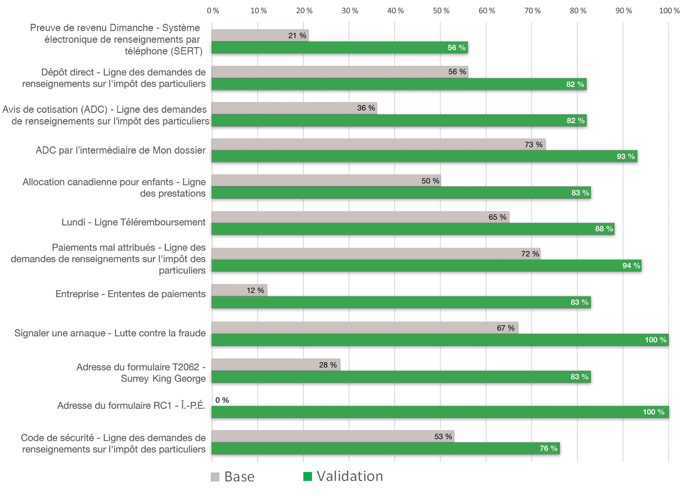

Résumé de recherche : Communiquer avec l’ARC
Chaque année, des millions de Canadiens téléphonent au centre d’appels de l’Agence du revenu du Canada (ARC) pour se renseigner au sujet de leurs impôts, leurs prestations et leurs entreprises. Au moins cinq millions d’entre eux cherchent le numéro de téléphone sur Canada.ca, ce qui fait de la page des coordonnées de l’ARC l’une des tâches principales de Canada.ca.
Il est possible d’effectuer de nombreuses tâches courantes en ligne, comme modifier une adresse ou trouver la bonne adresse postale où envoyer un formulaire. Si les Canadiens savaient comment effectuer ces tâches en ligne, plusieurs appels pourraient être évités. Cela libérerait les agents pour leur permettre de résoudre des problèmes plus complexes par téléphone. À l’aide des données probantes des centres d’appels et des données analytiques Web, le Bureau de la transformation numérique (BTN) du Secrétariat du Conseil du Trésor (SCT) s’est associé à l’ARC pour travailler à améliorer des résultats.
Les agents des centres d’appels contribuent à l’obtention de bons résultats
Les agents des centres d’appels de l’ARC et les spécialistes de la Section de l’optimisation des canaux transversaux de la Division de la planification stratégique et des opérations du Centre d’appels se sont joints à l’équipe. Ils ont produit un vaste ensemble de scénarios en situation réelle. Ces scénarios reflétaient les problèmes et les contextes qui entraînent le plus grand volume d’appels.
Par exemple :
- Quand j’obtiens la garde complète de mes enfants, je veux mettre à jour mes renseignements bancaires pour que les prestations pour enfants soient versées dans mon compte.
- Quand je fais une demande de prêt hypothécaire, je veux obtenir une copie de mon avis de cotisation pour que je puisse remplir la liste de vérification de la banque.
- Quand je télécharge une version papier de mon imprimé fiscal, je veux connaître la bonne adresse postale pour que je puisse l’envoyer et obtenir mon remboursement.
L’équipe de recherche a transformé ces scénarios en tâches que les participants devaient exécuter dans le cadre de séances d’essai.
Établissement d’une référence
Les normes numériques du gouvernement du Canada commencent avec « conception avec les utilisateurs ». Cette façon de faire met l’accent sur la recherche et la mise à l’essai auprès des utilisateurs, ce que le BTN fait depuis le début. Notre processus est centré sur un test de référence pour mesurer le degré de réussite des utilisateurs avec les scénarios de tâches principales de la conception actuelle. Nous voulons cerner les problèmes qui les empêchent de réussir. Comme nous voulions mettre à l’essai des scénarios de tâches tant pour les particuliers que pour les entreprises, nous avons recruté des propriétaires de petites entreprises canadiennes comme participants aux séances de recherche. Les propriétaires d’entreprise connaissent bien les défis commerciaux et doivent aussi faire leur déclaration de revenus des particuliers.
Nos participants reflétaient l’éventail des compétences numériques chez les propriétaires d’entreprises canadiennes. Quelques participants qui travaillent surtout sur le terrain avec leurs clients ne savaient pas comment copier/coller du texte d’une page Web à une autre. D’autres étaient des utilisateurs en ligne experts qui gèrent leur propre site Web.
En plus de mesurer les taux de réussite des tâches, l’équipe a analysé le comportement des utilisateurs en regardant des vidéos des tests. Cela nous a permis de voir où les utilisateurs ont éprouvé des difficultés. L’une des grandes difficultés que nous avons observées était que les utilisateurs n’arrivaient pas toujours à accéder à la page des numéros de téléphone. Ils devaient d’abord cliquer sur le lien Demandes de renseignements par téléphone, puis accéder à une fenêtre superposée dans laquelle ils devaient sélectionner le type de demande de renseignements. Lorsqu’ils réussissaient à atteindre la page des numéros de téléphone, ils sélectionnaient souvent le mauvais numéro de téléphone à partir de la longue liste.
Refonte de la conception visant à aider les utilisateurs à trouver le bon numéro de téléphone
En utilisant les résultats des tests de référence, l’équipe a conçu un prototype pour résoudre les problèmes. Nous nous sommes concentrés sur les principaux défis de conception suivants.
Création de pages personnalisées pour les tâches principales
L’équipe a créé des pages de coordonnées personnalisées pour chacun des principaux facteurs générateurs d’appels. De cette façon, les utilisateurs pouvaient trouver le bon numéro de téléphone pour leur tâche avec un bouton de connexion au-dessus.
Aider les utilisateurs à trouver des réponses rapidement
Nous avons mis au point un assistant « Trouver un numéro de téléphone » et un agent conversationnel. Cela a aidé les utilisateurs à trouver rapidement le numéro qu’ils cherchaient sans qu’ils aient à examiner toutes les options disponibles.
Aider les utilisateurs à choisir la bonne option
Chaque fois qu’il y avait un choix à faire qui exigeait une seule réponse, nous avons utilisé le modèle de conception rétractable pour masquer les réponses dont les utilisateurs n’avaient pas besoin. Par exemple, les numéros de téléphone sont différents selon qu’on modifie l’adresse du domicile ou l’adresse de l’entreprise. Plutôt que d’afficher les deux numéros, nous avons d’abord fait choisir les utilisateurs entre le domicile et l’entreprise. Se faisant, ils ne révélaient que le numéro dont ils avaient besoin.
Réduction du nombre d’appels en affichant l’option en ligne en premier
Nous avons fait en sorte que chaque page contenant un numéro de téléphone affiche un bouton d’action primaire avec l’option en ligne en premier. Habituellement, les utilisateurs ne veulent pas téléphoner s’il existe un moyen d’exécuter la tâche en ligne; il est important de faciliter le plus possible la connexion et l’exécution de la tâche.
Regroupement pour les moteurs de recherche et pour les utilisateurs
Dans l’étude de référence, nous avons remarqué que les utilisateurs aboutissaient aux pages Numéros de téléphone, Heures de service ou Contactez-nous. Ces pages comportaient des liens vers d’autres pages contenant des détails supplémentaires importants, mais les utilisateurs suivaient rarement les liens. Cela signifiait qu’ils ne se rendaient pas compte, par exemple, que telle ligne téléphonique n’était pas ouverte le soir ou qu’ils devaient préparer certains documents avant de téléphoner. La nouvelle conception présentait le numéro de téléphone accompagné d’une liste de vérification pour se préparer à l’appel. Cela comprenait des renseignements comme les heures d’ouverture et le service offert à ce numéro.
Mesurer la réussite
La réussite globale des tâches est passée de 40 % à 85 % lorsque nous avons re-testé les scénarios de tâches sur le prototype.
Ce graphique présente une comparaison des taux de réussite des tâches entre les tests de référence et les tests de validation pour tous les participants.
Taux de réussite des tâches – tableau
| Tâche | Base | Validation |
|---|---|---|
| Preuve de revenu Dimanche - Système électronique de renseignements par téléphone (SERT) | 21 % | 56 % |
| Dépôt direct - Ligne des demandes de renseignements sur l'impôt des particuliers | 56 % | 82 % |
| Avis de cotisation (ADC) - Ligne des demandes de renseignements sur l'impôt des particuliers | 36 % | 82 % |
| ADC par l’intermédiaire de Mon dossier | 73 % | 93 % |
| Allocation canadienne pour enfants - Ligne des prestations | 50 % | 83 % |
| Lundi - Ligne Téléremboursement | 65 % | 88 % |
| Paiements mal attribués - Ligne des demandes de renseignements sur l'impôt des particuliers | 12 % | 83 % |
| Entreprise - Ententes de paiement | 28 % | 83 % |
| Signaler une arnaque - Lutte contre la fraude | 67 % | 100 % |
| Address du formulaire T2062 - Surrey King George | 22 % | 89 % |
| Address du formulaire RC1 - Î.-P.-É. | 0 % | 100 % |
| Code de sécurité - Ligne des demandes de renseignements sur l'impôt des particuliers | 53 % | 76 % |
Ce que nous avons appris
Les utilisateurs sont plus susceptibles de trouver le bon numéro de téléphone ou la bonne adresse lorsque :
- nous nous employons à les aider à trouver la bonne réponse pour eux;
- nous utilisons des assistants et des choix forcés pour éviter la surcharge d’information;
- nous créons des pages de coordonnées personnalisées pour les principaux facteurs générateurs d’appels;
- nous regroupons toutes les réponses pour une tâche de coordonnées, y compris les heures de service, la préparation et les services offerts.
Demander les résultats de recherche
Si vous souhaitez voir les conclusions de recherche détaillés de ce projet, envoyez-nous un courriel à dto.btn@tbs-sct.gc.ca.
Dites-nous ce que vous en pensez
Envoyez un gazouillis en utilisant le mot-clic #Canadapointca.
Pour en savoir plus
- Lisez notre billet de blogue : Conseils de conception de contenu tirés de nos projets d’optimisation du contenu « Conseils aux voyageurs et avertissements » et « Communiquer avec l’ARC »
- Consultez les aperçus de nos autres projets avec nos partenaires